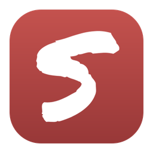

Sɛbɛni Studio fuga
Test build 0.3.0-fuga · 26 November 2026 · Windows, macOS, Ubuntu/Debian
Thank you for testing. This page has the downloads, how to install on each system, what to try, and how to report what you find. The app is in English or French (you choose at first launch) and works on languages of Mali, Bambara by default.
See also: the recorded full test of this build (video, 57 automatic checks, screenshots).
Download
All files are on the fuga release page, with SHA256SUMS.txt to check your download.
Install
Installer (recommended)
- Download
SebeniStudio-fuga-win-x64.exeand open it. - Windows may show “Windows protected your PC”, because test builds are not code-signed yet. Click More info, then Run anyway.
- Choose “Only for me”, keep or change the install folder, and click Install. No administrator rights are needed.
- Start Sebeni Studio from the Start menu or the desktop shortcut.
Portable (no install)
- Download
SebeniStudio-fuga-win-x64.zip, right-click it and choose Extract All…. - Open the extracted folder and double-click
SebeniStudio.exe. Answer the SmartScreen prompt as above.
Remove
Settings → Apps → Installed apps → Sebeni Studio → Uninstall. For the portable version, delete the folder. Your projects and settings stay (see where data lives).
.deb package (recommended)
- Download
SebeniStudio-fuga-linux-amd64.deb. - Open a terminal in your Downloads folder and run:
Keep thesudo apt install ./SebeniStudio-fuga-linux-amd64.deb./: it tells apt to use the local file and fetch any missing libraries. - Start Sebeni Studio from the applications menu, or type
sebeni-studioin a terminal.
Remove: sudo apt remove sebeni-studio
AppImage (no install)
- Download
SebeniStudio-fuga-linux-x86_64.AppImage. - Make it executable and run it:
chmod +x SebeniStudio-fuga-linux-x86_64.AppImage ./SebeniStudio-fuga-linux-x86_64.AppImage
- Ubuntu 22.04 needs FUSE 2:
sudo apt install libfuse2. (On 24.04 the package islibfuse2t64.) - Ubuntu 24.04 may stop it with a “sandbox” error. Use the .deb package instead, which sets this up for you, or start it with
--no-sandbox.
- Download
SebeniStudio-fuga-mac-arm64.zipand double-click it to unzip. - Drag Sebeni Studio into your Applications folder.
- The first time, right-click (or Control-click) the app and choose Open, then Open again. Test builds are not notarized by Apple, so a normal double-click is refused the first time.
- On macOS 15 and later, if there is no Open button: try to open the app once, then go to System Settings → Privacy & Security and click Open Anyway.
xattr -cr "/Applications/Sebeni Studio.app"Intel Macs are not supported in this build. Remove: drag the app from Applications to the Bin.
First launch
A short setup runs the first time. You can skip any step and run it again later in Settings → Interface.
- Interface language: English or French. This is the language of the menus, separate from the language you write in.
- Languages: the workspace language (Bambara by default) and the pivot language for glosses (French by default).
- Keyboard: try the key map. For example
e;typesɛ,o;typesɔ, andn;;cycles toŋ. - Sebeni model: the language models from mlsftwrs. Most are private: paste the Hugging Face token you were given to see and download them. The default model downloads by itself once the token is set.
- Keys: an NVIDIA API key turns on the main model (Nemotron), which powers the Assistant, Jeliba stories and the project architect. Without it the app still works with the dictionary, key map and guide, and gives offline answers.
- Theme: light or dark.
What to try
- Start a project from one of the presets (Translate, Jeliba story and 3D world, Corpus annotation, Full studio) or describe it to the Architect.
- Write in a document: spelling suggestions, the key map, Alt+click a word to look it up, export to .docx and .md.
- Panes: drag tabs to the edges to split, drag dividers, close everything and use the Start page.
- Dictionary: look up words, add your own entries, open the word map.
- Annotation: accept, update and clear steps; rename and delete an annotation project.
- Jeliba: answer the story questions, press BEGIN, pick choices, then use stage commands such as
/move Sali to wellin the 3D stage. - Models: the model library (the model chip in the status bar), download and use a model.
Reporting a problem
Send each issue to the test coordinator with:
- your system (for example “Windows 11”, “Ubuntu 24.04”, “macOS 15 on M2”) and the build name fuga;
- what you did, what you expected, and what happened;
- a screenshot or short screen recording if you can.
Where your data lives
| Projects | Settings, models, keys | |
|---|---|---|
| Windows | Documents\Sebeni\projects | %APPDATA%\Sebeni Studio |
| macOS | ~/Documents/Sebeni/projects | ~/Library/Application Support/Sebeni Studio |
| Linux | ~/Documents/Sebeni/projects | ~/.config/Sebeni Studio |
Uninstalling keeps these folders. Delete them for a completely fresh start.
Check a download (optional)
Compare the result with the line for your file in SHA256SUMS.txt.
# Windows (PowerShell)
Get-FileHash .\SebeniStudio-fuga-win-x64.exe
# macOS
shasum -a 256 SebeniStudio-fuga-mac-arm64.zip
# Linux
sha256sum SebeniStudio-fuga-linux-amd64.deb